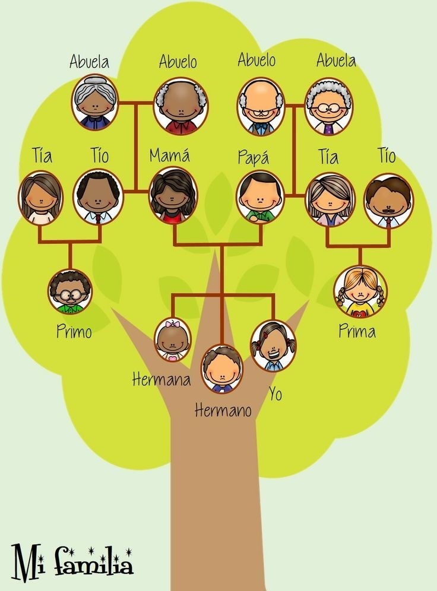
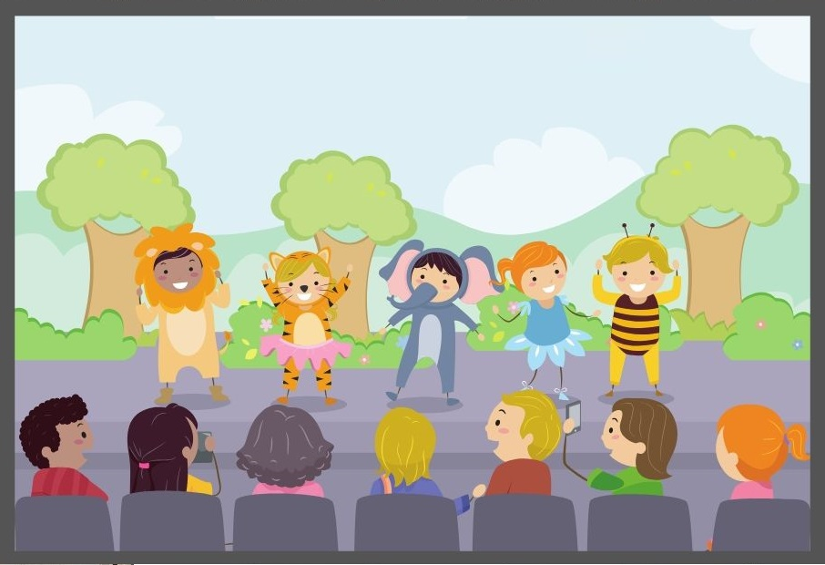
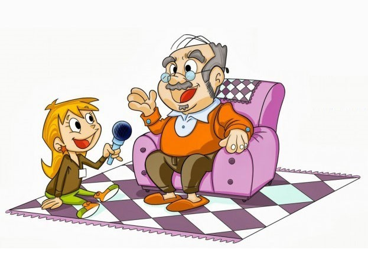
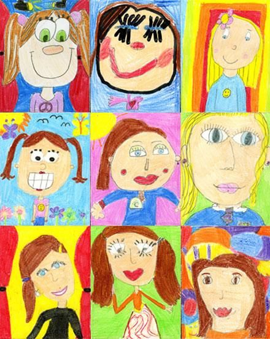
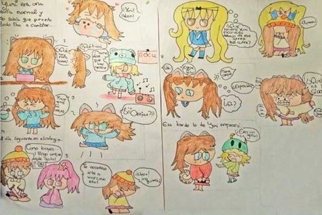
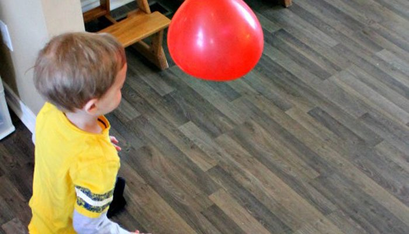
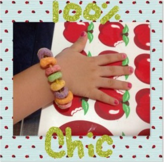
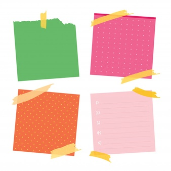

Elaborar un árbol genealógico junto con la familia, si se puede incluir fotografías.

Representar una obra de teatro. (Escribir una pequeña obra de teatro y representarla en familia).

Jugar a ser periodista. (Imaginar que un miembro de la familia es alguien famoso y entrevistarlo).

Hacer un autorretrato.

Escribir una historia o dibujar un cómic.

Jugar al voleibol o al tenis con un globo inflado.

Hacer pulseras con ruedas de cereal (froot loops).

Hacer un karaoke. (Transcribir una canción que le guste y luego cantarla).
Buscar formas en las nubes. (Salir al patio o mirar por la ventana, observar las nubes, busca formas en ellas y dibujarlas)
Escribir en un papel diez cosas que le gustan de cada miembro de su familia.
